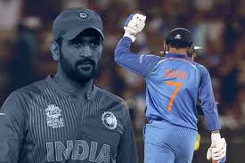
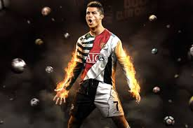
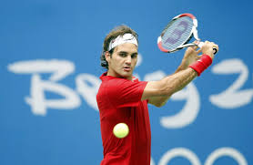

My Work
  

My favourite hobby is sports because it is entertaining and energetic. I feel relaxed and happy when I play sports and also get some free exercises. I like running around and jumping which makes me feel like a kid. Sports also includes teamwork and I like playing with my friends. I like to be competitive and always win, but in sports you have to accept anything even if you lose or win. I can build my sportsmanship in sports.
The last minute penalty shot that wins the tournament. The training montage. Many people love to glorify victory on the field, cheer for teams, and play sports. But should we be obsessed with sports? Are sports as good for us as we make them out to be, or are they just a fun and entertaining pastime? find out in this video I shared.
My Role Model Is Thala Dhoni because he is very calm and has a strong sportsmanship. he has a caring heart to others and encourages everyone. he is not only a role model for me but for many future cricketers.